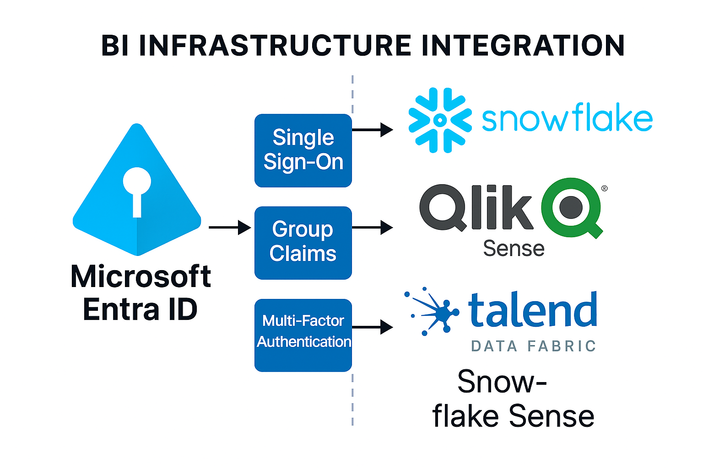

Challenge
The company had purchased Snowflake, Qlik, and Talend—but none of the systems were connected, and user access was manual and insecure. My task was to integrate these platforms with Microsoft Entra to enable secure authentication, automated provisioning, and seamless collaboration for data scientists.
Tools & Technologies
- Snowflake Data Lake
- Qlik Sense / Qlik Cloud
- Talend Data Fabric
- Microsoft Entra ID (SSO, SCIM, Conditional Access)
- Group Claims & Role Mapping
- Multi-Factor Authentication (MFA)
Implementation
- Created user accounts and roles in Snowflake
- Integrated Snowflake with Entra for SSO and SCIM-based automatic user provisioning
- Connected Qlik and Talend to Entra for SSO and group-based access control
- Passed group claims to Qlik and Talend to enable dynamic role assignment via Entra groups
- Enabled MFA and Conditional Access policies for all BI platforms from day one
- Eliminated manual user management and ensured secure sign-in across the stack
Architecture Diagram
This placeholder diagram will be replaced with the final version:
Impact
- Unified identity and access across Snowflake, Qlik, and Talend
- Enabled secure sign-in with MFA and Conditional Access enforcement
- Automated user provisioning and role assignment via Entra groups
- Allowed data scientists to focus on building PKI reports and sharing insights